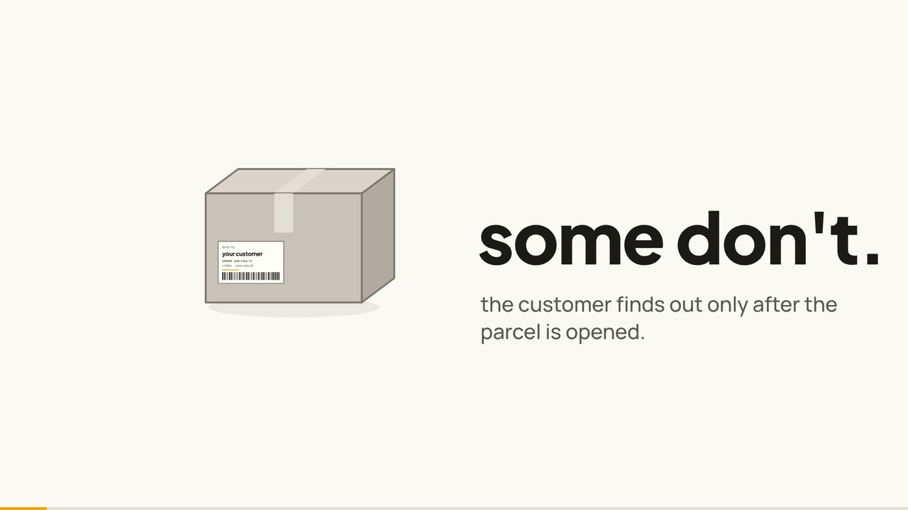
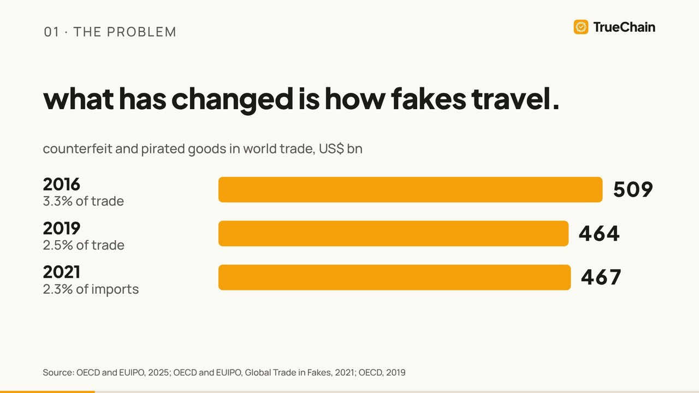
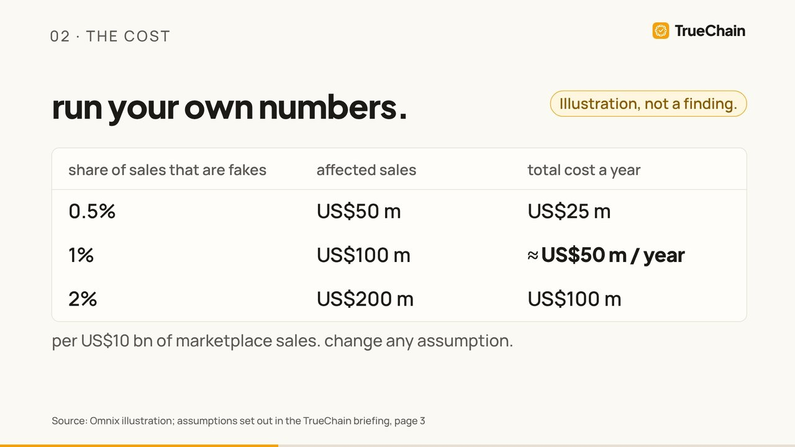
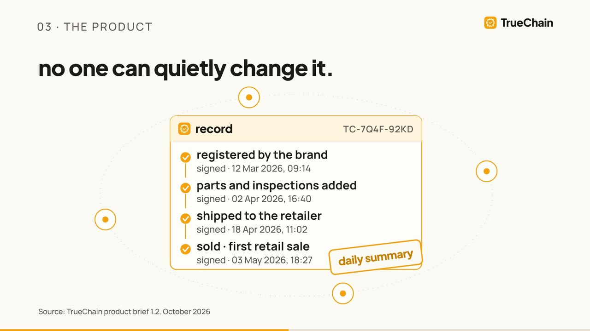
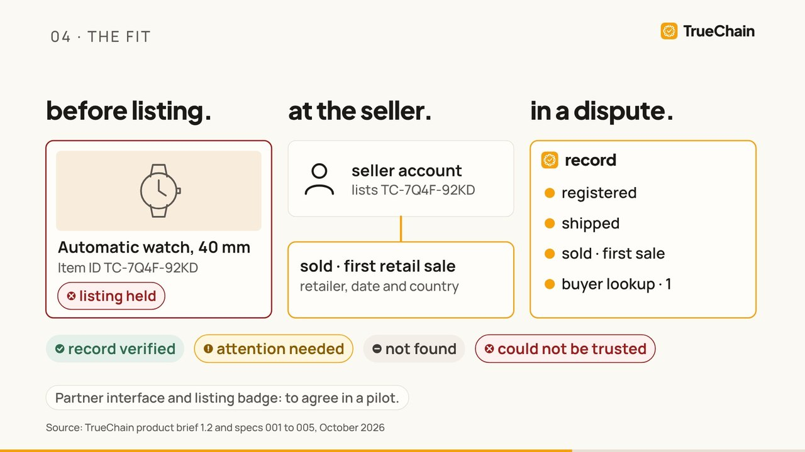
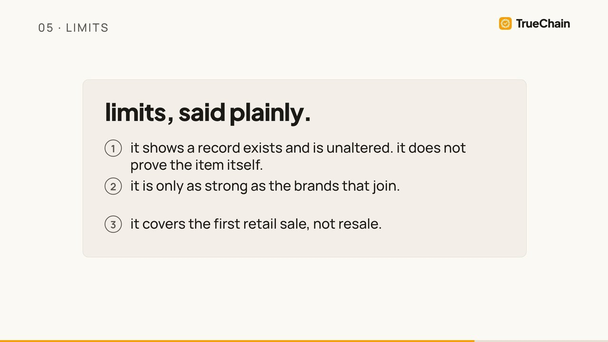
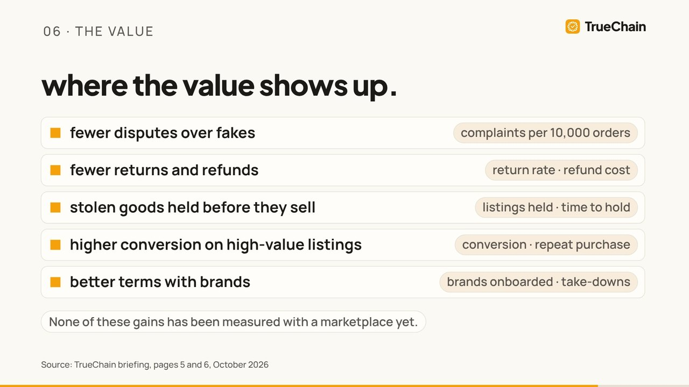
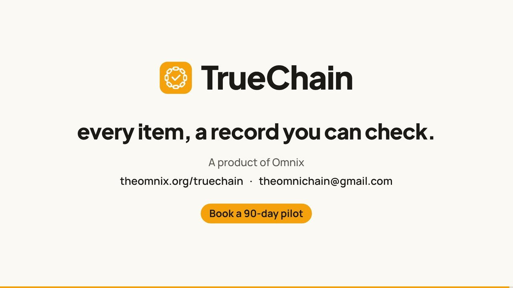

Storyboard for the 4:40 board briefing, one frame per scene, rendered from the real motion engine with the real voiceover timings. Scenes 1 and 2 are fully animated in the animatic below. Scenes 3 to 8 are built and will be polished to the same level after you approve.
0:00 to 1:00 with voice, music and sound design. Scenes 1 and 2 run 60 seconds in your script's timings, so the animatic covers both in full rather than cutting to 30 seconds.

Frame at 0:14
SCENE 1 · COLD OPEN · 0:00–0:20
some don't.
Picture
Black fades to cream on a single soft tone. One amber parcel drops and lands with a soft thud. The camera pushes into its shipping label until it fills the frame, then pulls straight back through it to reveal a slow conveyor grid of amber parcels. One parcel turns grey, the rest fall away, and its lid lifts.
On screen
"millions of parcels leave every day." / "most hold exactly what was ordered." / "some don't."
Sound
Near silence, then sparse felt piano. Thud, a muted low tone on the grey parcel, a paper rustle on the lid.
Carries into 2: the grey parcel's face flattens into the amber line that the US$467 bn counter rises out of.

Frame at 0:38
SCENE 2 · THE SCALE · 0:20–1:00
fakes are big business.
Picture
US$467 bn counts up as the number is spoken. The line becomes the 2021 bar and 467 flies to its label while 2016 and 2019 grow beside it. The bars merge into a shipping container, which breaks into 200 small parcels next to 80%. The parcels then gather into three category cards: apparel, footwear, watches and jewellery.
On screen
US$467 bn · 2.3% of world imports · 509 / 464 / 467 · 80% · 62% of seized fakes were clothing, footwear or leather goods.
Sources
OECD and EUIPO 2025, 2021 and 2019 · OECD, Misuse of E-commerce, 2021 · OECD and EUIPO via trade press (62%).
Carries into 3: the category cards clear to the amber rule that underlines US$1 bn+.

Frame at 1:38
SCENE 3 · THE COST · 1:00–1:45
run your own numbers.
Beats
US$1 bn+ (defence alone) → four cost cards: returns, refunds, reverse pickups, word against word → 64% with "Stated intention in vendor surveys, not measured churn." → the sizing table, 1% row lit at ≈ US$50 m / year.
Compliance
The marketplace is named only in the voiceover and the source line. The table carries "Illustration, not a finding."

Frame at 2:17
SCENE 4 · TRUECHAIN · 1:45–2:35
every item, a record you can check.
Beats
Logo reveal with a soft chime → the lockup flies into the header of the amber record card → factory, assembly, shipping, retail light up as each signed, timestamped entry lands → four ledger nodes ring the card and the "daily summary" stamp drops → a phone scans the watch QR and the record opens.
Motif
The same record card returns in scenes 5 and 7.

Frame at 3:19
SCENE 5 · THE FIT · 2:35–3:22
before listing. at the seller. in a dispute.
Beats
Each column comes into focus as it is spoken: a generic listing card goes to "listing held" (muted tone) → the seller account links to the first-sale entry → the chat thread is replaced by one record panel → the four verdict pills, each with its text label.
Compliance
Generic marketplace UI only. "Partner interface and listing badge: to agree in a pilot."

Frame at 3:38
SCENE 6 · HONEST LIMITS · 3:22–3:47
limits, said plainly.
Beats
Music drops almost to silence. Three lines build: the record proves it exists and is unaltered, not the item itself · only as strong as the brands that join · first retail sale, not resale. The card slides away to "let's prove it together, not on our word."

Frame at 4:03
SCENE 7 · THE VALUE · 3:47–4:15
where the value shows up.
Beats
Five gains build, each with the number that would prove it. Tag: "None of these gains has been measured with a marketplace yet." The watch then becomes a row of handbag, sneaker and laptop under "in pilot with luxury watches."

Frame at 4:38
SCENE 8 · THE ASK · 4:15–4:40
a 90-day pilot.
Beats
Pilot card: scope 2 brands · 1 category · 90 days, targets fixed together before we start, results read together. The end card lands at 4:27 and holds 12.6 s (well over the 4 s minimum) as the final chord rings out.
four things to confirm.
Logo. The amber rounded square from the deck now carries your chain-and-tick mark in cream. If you'd rather keep the deck's plain square, I'll switch it.
Music licence. Instead of Artlist or Epidemic, the score and sound design are composed in code for this film: felt piano and pads at 92 BPM. That means no licence, no Content ID claims, and Omnix owns it outright.
B-roll. None is used yet; every frame is motion graphics. Real watch-dial or conveyor footage needs a stock source (the 15% limit applies) or your own clips.
Animatic length. Scenes 1 and 2 run 60 s in your script, so the animatic is 60 s rather than 30.